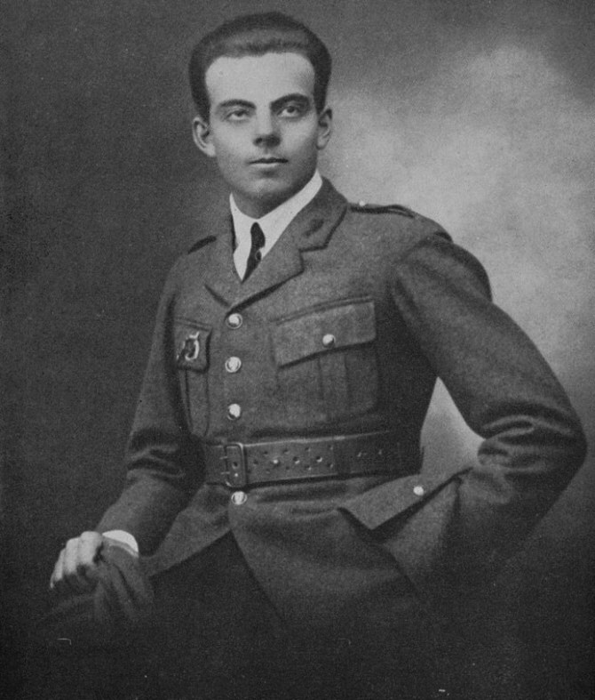

Книги Антуан де Сент-Экзюпери

Маленький принц
У людей уже не хватает времени что-либо узнавать. Они покупают вещи готовыми в магазинах. Но ведь нет таких магазинов, где торговали бы друзьями, и потому люди больше не имеют друзей.
Тоска — это когда жаждешь чего-то, сам не знаешь чего... Оно существует, это неведомое и желанное, но его не высказать словом.
Если кто-то мыслит иначе, чем я, он не только не оскорбляет меня этим, но, напротив, обогащает меня. Основа нашего единства — Человек, который выше каждого из нас.
В человеке я люблю свет. Толщина свечи меня не волнует. Пламя скажет мне, хороша ли свеча.